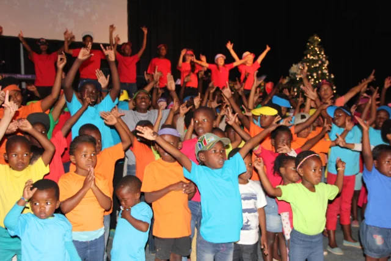
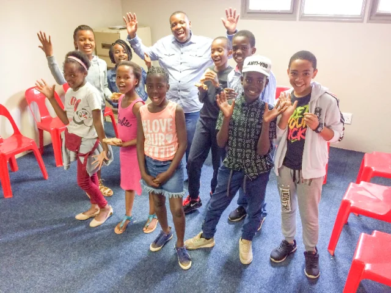

A generation worshipping loud, belonging deep and discovering exactly who God made them to be. Fridays and Sundays — pull up a seat.
No pressure, no performance. Just a community where questions are welcome, friendships are real, and every young person is seen and celebrated.
Loud, honest and full of life.
Faith and life, no topic off-limits.
People who actually show up for you.
Discovering the leader inside you.
A safe, joyful, age-appropriate space where kids meet Jesus in their own language — through story, song and play — every Sunday while you're in the service.


New faces welcome, always. Come a little early and we'll introduce you around.